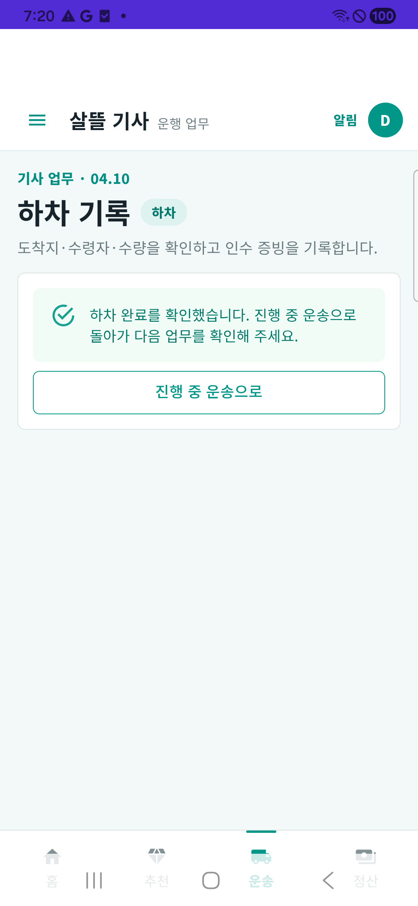
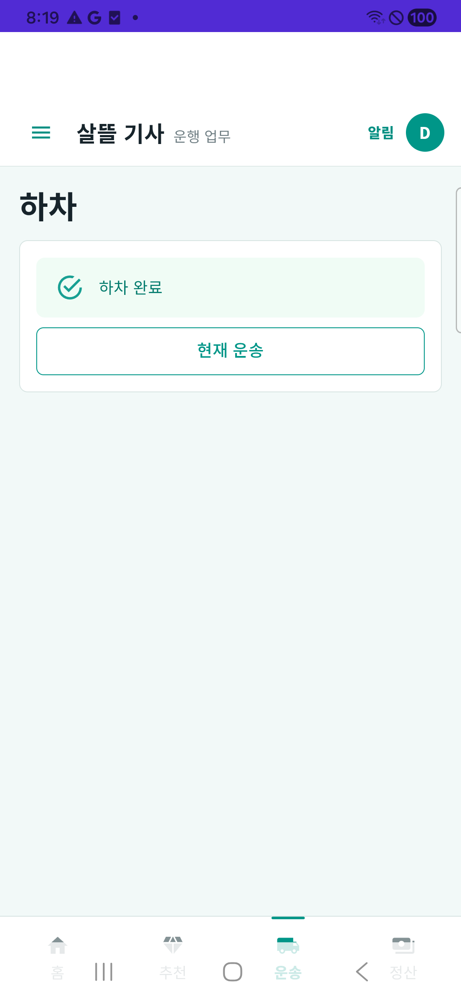
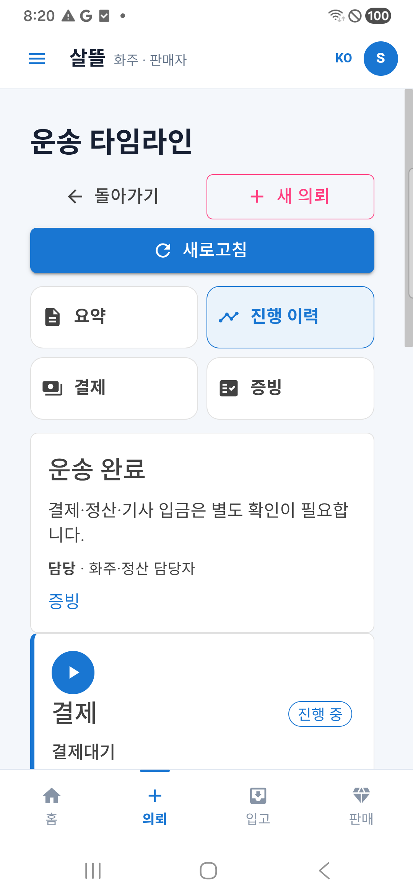
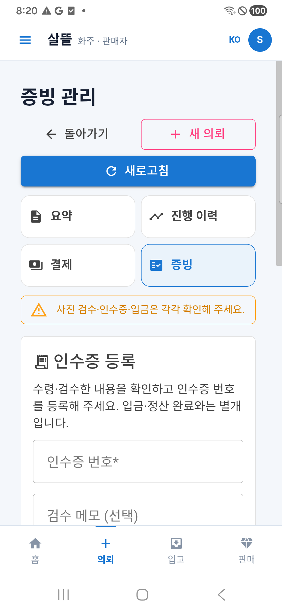
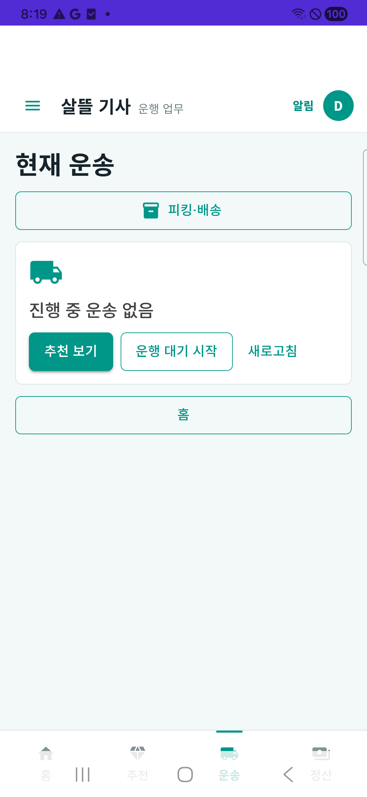
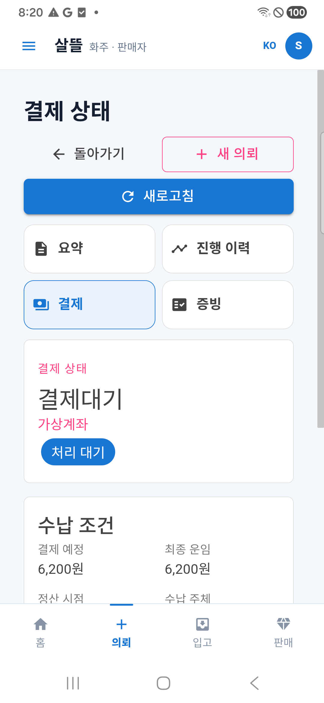

화물 화면 · 문구 정리 전후
같은 가상 운송 9를 조회해 비교했습니다. 새 완료 요청은 보내지 않았습니다.
실제 기기 화면 확인입니다. 서버 업무 전체를 다시 수행한 검증과 구분합니다. PNG 바이트는 바꾸지 않았습니다.
기사 · 하차 완료


2026-10-21T10:20:50.363Z

2026-10-21T11:19:26.468Z화주 · 진행 상황
 2026-10-21T10:23:15.555Z
2026-10-21T10:23:15.555Z

2026-10-21T11:20:11.807Z화주 · 증빙
 2026-10-21T10:23:47.785Z
2026-10-21T10:23:47.785Z

2026-10-21T11:20:38.064Z추가 확인


2026-10-21T11:19:14.898Z

2026-10-21T11:20:55.903Z